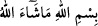
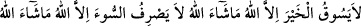
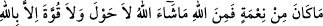

Rasûlullah (s.a.)’e: “Anam babam sana fedâ olsun, yâ Rasûlallah! Semâdan inip de
yediğimiz bu yemek neydi?” dedim. Hz. Peygamber (s.a.) buyurdu ki: “Ben de bunu ona
sordum, o şöyle dedi: “Cebrâil (a.s.) her kırk günde bir defa yemek, her yılda da bir
defa zemzem suyu getirir. Bazen onu geniş kuyu başında kova dolusu su çekip içerken
görürüm, bazen bana da içirir.”[202]
Muhaddislerin çoğu Hızır (a.s.)’ın öldüğü görüşündedir. Buhârî’ye: “Hızır ve İlyas
(a.s.)’ın hayatta olup olmadığı” sorulunca, “Bu nasıl mümkün olsun, Rasûlullah (s.a.):
“Yüzyılın başında bugün yeryüzünde yaşayanlardan hiç kimse kalmaz.[203]” buyuruyor.
Allah Teâlâ da: “Senden önce hiçbir beşere ebedi bir hayat vermedik” (el-Enbiyâ,
21/34) buyurmuştur.
Bunun cevabı şöyledir: “Bu hüküm çoğunluğa göre câri olmuştur. Yüz senenin
üzerinde yaşayanlar ise nadir hükmündedir. Meselâ Selmân, Ma‘dîkerib, Ebû Tufeyl (r.
anhüm) yüz seneden fazla yaşamışlardır. Rasûlullah (s.a.) bunu haber verirken onlar
hayattaydı. Âyette “hulûd (ebedî hayat)” ile kastedilen sonsuzluktur. Şüphesiz Hızır
(a.s.) ve benzerlerinin hayatı kıyâmetten önce ilk sûra üfleyiş (es-saika) ile sona erer.
Böylece onlar ebedî olmanın dışında kalmış olurlar.
Âlimlerden bâzılarının “Hızır (a.s.)’ın hayatta olması mümkün değildir. Çünkü
Peygamberimiz (s.a.)’den sonra peygamber yoktur.” şeklindeki sözlerine gelince, buna
îtibar edilmez. Çünkü Hızır (a.s.)’ın peygamberliği Rasûlullah (s.a.)’den sonra değil,
önce idi. Allah Teâla bir hikmetine binâen Kur’an’ın yeryüzünden kaldırılmasına kadar
onu da Îsâ (a.s.) gibi hayatta bırakmıştır.
Şeyhu’l-Ekber (k.s.) bazı kitaplarında der ki: “Mehdî (a.s.) zuhûr ettiği zaman Hızır
(a.s.) âhir zamanda ashâb-ı kehf ile berâber zuhûr edecek, şehid olacak ve Mehdî
(a.s.)’ın askerlerinin şehidlerinin en değerlilerinden biri olacaktır.”
Sahih-i Müslim’in sonunda deccal hadisleri arasında onun bir adamı öldürüp sonra
dirilteceği şeklinde bir rivâyet vardır.[204] Müslim’in ashâbından İbrahim b. Süfyan:
“Bu kimsenin Hızır (a.s.) olduğu söylenir.” der.
İbn Abbas’tan da şöyle rivâyet edilmiştir: “Hızır ve İlyâs (aleyhime’s-selâm), her yıl
belli bir mevsimde bir araya gelir ve her biri arkadaşının başını tıraş eder. Sonra şu
duâları okuyarak birbirinden ayrılırlar:
“Allah’ın ismiyle, Allah’ın dilediği olur. Hayrı ancak Allah sevkeder. Allah’ın
dilediği olur. Kötülüğü ancak Allah çevirir, Allah’ın dilediği olur. Nîmet ancak
Allah’tandır. Allah’ın dilediği olur. Güç ve kuvvet ancak Allah’tandır.” Kim sabah